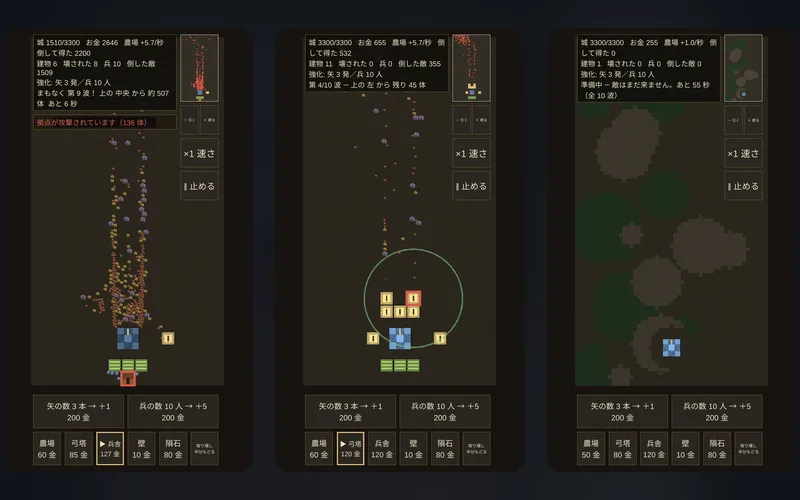
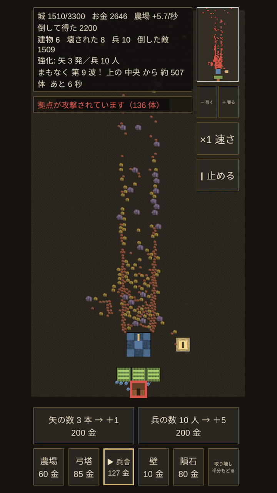
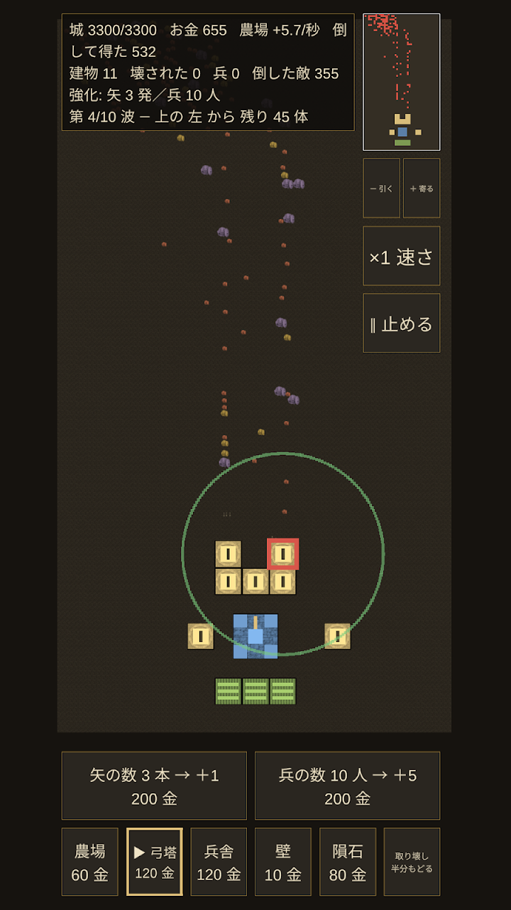
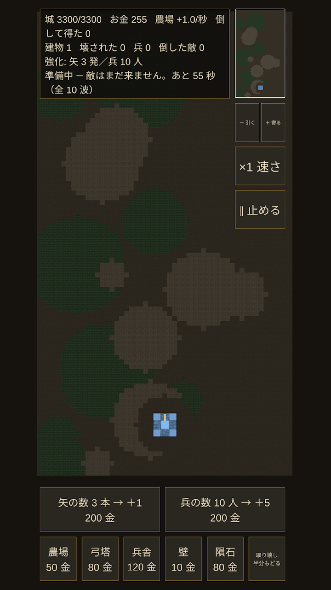
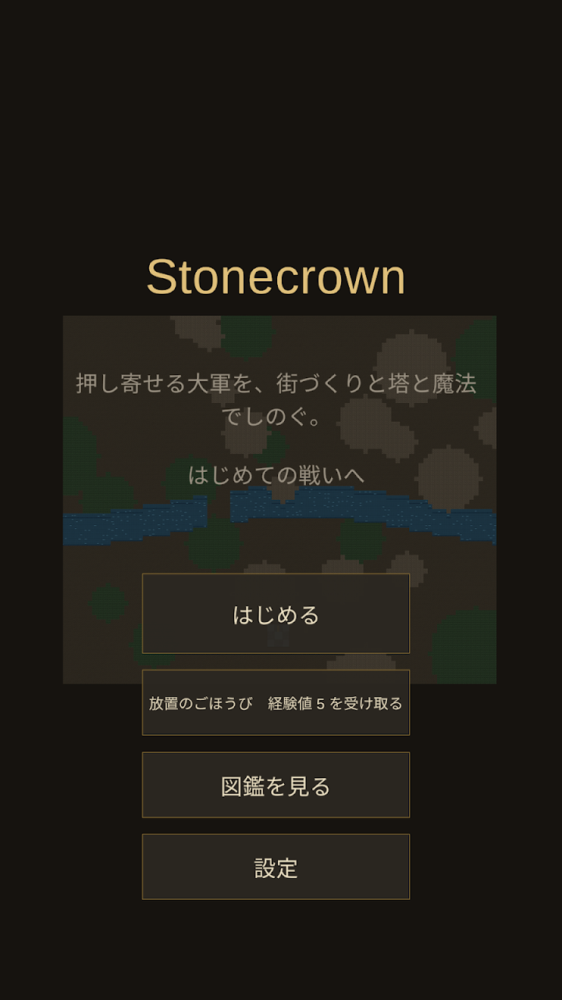
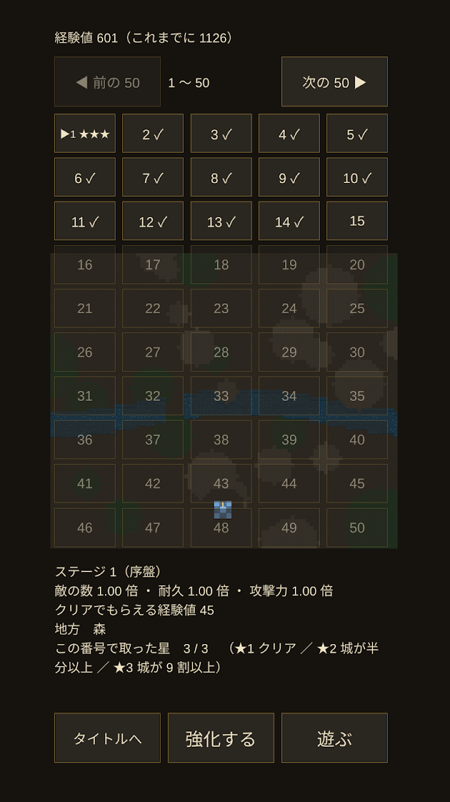
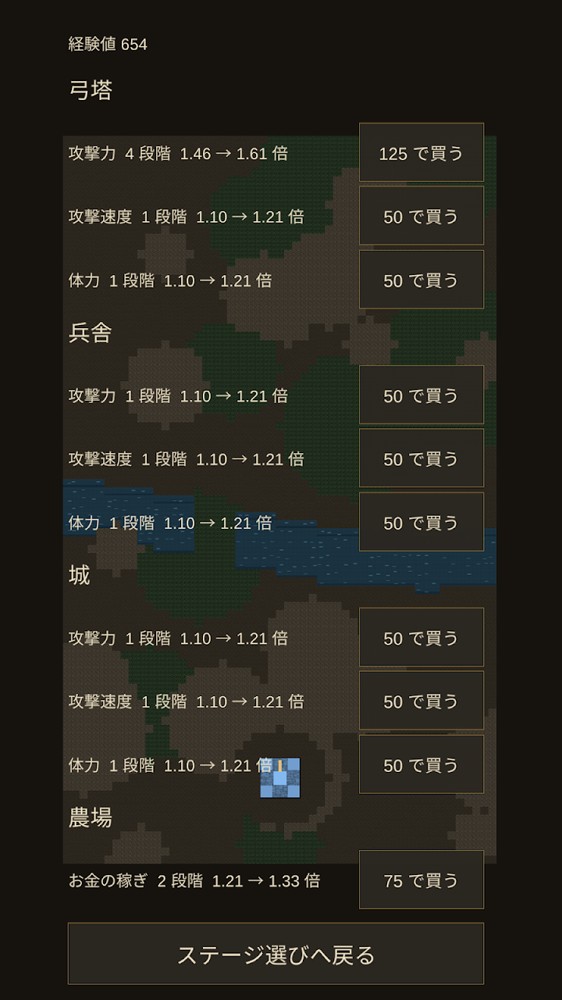
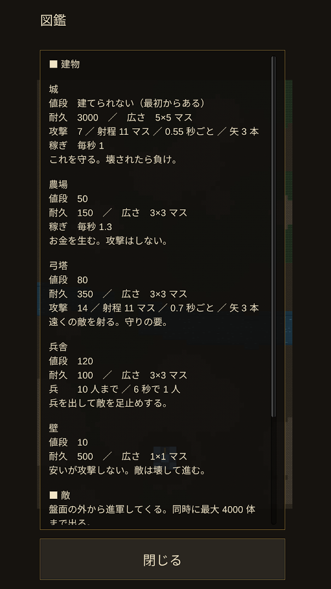
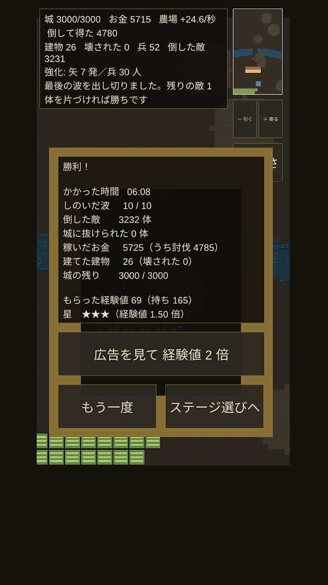

STEAM BASE
STEAM BASEStonecrown 石と王冠
防衛ストラテジーDefense strategy街づくりと塔と魔法で大軍をしのぐ、片手で遊べる中世ファンタジーの防衛ストラテジー。1戦はおよそ5〜10分。A one-handed medieval fantasy defense game: hold back the horde with town building, towers and magic. 5–10 minutes a battle.

スクリーンショットScreenshots








Stonecrown 石と王冠 はどんなゲーム?What is Stonecrown 石と王冠?
城は 1 つ。道は何本もある。押し寄せる大軍を、どう止めますか。
Stonecrown（石と王冠）は、片手で遊べる中世ファンタジーの防衛ストラテジーです。
1 戦はおよそ 5〜10 分。通勤の途中でも、寝る前の一息でも、ちょうど切りのいい長さです。
遊び方
準備の 60 秒で、街をつくります。
農場でお金を増やし、弓塔で敵を射て、兵舎から兵を出し、壁で道を細くする。
どこにいくつ建てるかが、そのまま勝ち負けになります。
準備が終わると、敵が上から降りてきます。
波はだんだん厚くなり、終盤には数千の敵が地面を埋めます。
守りきれば勝ち。城が落ちれば負けです。
手が足りない時は、空から
魔法「隕石」を落とせます。密集した敵をまとめて薙ぎ払える一撃です。
ただし味方も巻き込みますし、撃つたびに次の 1 発が高くなります。
いつ使うかを迷うところまでが、この魔法の面白さです。
負けても、王国は強くなる
1 戦ごとに街はまっさらに戻りますが、稼いだ経験値は残ります。
経験値で「はじめの所持金」「弓塔の攻撃力」「農場の稼ぎ」を永久に強くできます。
負けた戦いでも経験値は入るので、進めなくなることがありません。
ステージに終わりはありません。進むほど敵は増え、硬く、強くなります。
どこまで行けるかは、あなたの組み立て方しだいです。
こんな作りです
- ステージは無限。地形は毎回ちがう
- 平原・森・雪原の 3 つの地方。雪原では川が凍り、渡られます
- 星 1〜3 の評価。城を無傷で守りきると星 3
- 中断しても、その盤面から続けられます
- 遊んでいない間も、少しだけ経験値がたまります
- 日本語と英語
お約束
- 広告は出ますが、控えめです。割り込み広告は 3 戦に 1 回まで。初めての 1 戦には出しません。「経験値 2 倍」の広告は、選んだ時だけ流れます
- 広告は 1 回の買い切りで消せます。消しても消さなくても、ゲームの強さは変わりません。課金でしか取れない強さはありません
- 通信するのは、広告と購入の確認のためだけ。機内モードでも、最初から最後まで同じように遊べます
- 個人情報を集めません。遊んだ記録はすべて、あなたの端末の中だけに残ります
対象年齢は 13 歳以上です。血や残酷な表現は入っていません。
こんな方におすすめ
- タワーディフェンスや防衛ゲーム、城を守るゲームが好き
- じっくり考える戦略シミュレーションを短い時間で遊びたい
- 負けても少しずつ強くなるローグライト要素が好き
- オフラインで遊べるゲームを探している
One castle. Many roads. How will you stop them?
Stonecrown is a medieval fantasy defense strategy game you can play with one hand. A battle runs about 5 to 10 minutes — the right length for a commute, or for the last quiet moment of the day.
How it plays
You get 60 seconds to build. Farms bring gold, towers shoot, barracks send out soldiers, and walls narrow the roads. Where you put them decides the battle.
Then the horde comes down from the top of the map. Each wave is heavier than the last, and by the end thousands of enemies cover the ground. Hold, and you win. Lose the castle, and you don't.
When your hands are full, call down a meteor
One strike clears a packed crowd. But it hits your own soldiers too, and every meteor makes the next one more expensive. Deciding when to spend it is half the game.
Losing still makes your kingdom stronger
Your town resets after every battle, but the experience you earned stays. Spend it on starting gold, tower damage and farm income — permanently. You earn experience even from a defeat, so you can never get stuck.
The stages never end. The further you go, the more enemies arrive, and the harder they hit. How far you get is a question of how you build.
What's in it
- Endless stages on freshly generated terrain every time
- Three regions — plains, forest and snowfield. In the snowfield the rivers freeze over, and the horde walks straight across
- One to three stars per stage. Finish with an untouched castle for all three
- Put it down mid-battle and pick the same board back up later
- A small amount of experience accrues while you are away
- Japanese and English
Our promises
- Ads, but kept light. Interstitials appear at most once every three battles, and never during your first one. The "double XP" ad plays only if you choose it
- One purchase removes the ads for good. Buying it changes nothing about how strong you are — there is no power you can only get by paying
- The network is used only for ads and to check that purchase. The game plays identically in airplane mode
- No personal information is collected. Your progress stays on your device
Rated for ages 13 and over. No blood, no gore.
よくある質問FAQ
無料で遊べますか?Is it free?
無料で遊べます。広告は控えめで、1回の買い切りで消せます。課金でしか取れない強さはありません。Yes. Ads are kept light and can be removed with a one-time purchase. Nothing that makes you stronger is sold.
オフラインで遊べますか?Can I play offline?
はい。通信は広告と購入の確認のためだけで、機内モードでも同じように遊べます。Yes. The network is only used for ads and purchase checks; it plays the same in airplane mode.
1回どのくらいで遊べますか?How long is a battle?
1戦はおよそ5〜10分です。中断しても、その盤面から続けられます。About 5–10 minutes, and you can resume a battle where you left off.
iPhone（iOS）でも遊べますか?Is it on iPhone (iOS)?
現在は Android 版（Google Play）のみです。App Store（iOS）では配信していません。Not at the moment — it is only on Android (Google Play), not on the App Store.